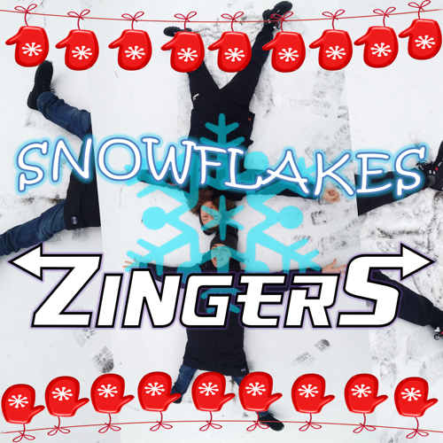

詳細
作・編曲、プログラミング、ボーカル、カバーデザイン：H1K0
作詞、ボーカル：KicKReprod
調号：ト長調
テンポ：114 BPM
長さ：3:01
誕生日：2019-12-08
リリース：2020-03-11
歌詞
色コード：H1K0、KicKReprod、一緒.
Intro |
イントロ |
|---|---|
| Cool time goes away. But I feel like it's going to be even cooler. | いい時代がなくなってしまうよなぁ。でも、まだこれからだって気がしてくるぜ！ |
| The same thing, man. It was a year of discovery, a year of opportunity. It's time to say "adios". | 俺も同じだ、兄弟。今年は発見や可能性に溢れた一年だったからな。これで、さらばだ！ |
Verse |
バース |
| We are stepping into a new life, | 新しい生活に踏み込む |
| Seeing off the past day and year. | 過ぎた年と日を見送りながら |
| Lift your eyes to this beautiful sunshine, | 見て、この素敵な太陽 |
| For all the failures we don't care. | そして面倒なんか忘れて |
| Life goes faster and faster, | 人生ってドンドン速くなってくるんだ |
| Sometimes you cannot watch the time, | 今を追い付かなくなる位 |
| So appreciate every moment, | だから感謝して |
| Which you will be able to find. | オマエの人生の瞬間全てに |
Bridge |
ブリッジ |
| Bring me a bunch of snowflakes | 雪片を沢山持ってきて |
| That fell near the cold lake, | 冷たい湖の近くで降ってきた奴ら |
| There is no end to it. | 数え切れない |
| Look at the view from mountain, | 山を登って |
| All stars can be counted, | 全ての星を数えられる |
| As long they exist. | 存在するから |
Chorus |
コーラス |
| Christmas paradise: | クリスマス天国 |
| I really can imagine! | 想像出来る！ |
| Look into my eyes: | 俺の目を見て |
| How about some magic? | 魔法を掛けようか？ |
| Let's go there again, | また行こう |
| Where the dreams come true! | 夢を叶えられる所へ！ |
| Let's forget the pain, | 痛みなんか忘れて |
| And joy will come to you! | いっぱい楽しんで！ |
Verse |
バース |
| It is going to be an incredible year, | 今年は素晴らしい一年になりそうなんで |
| And I'm feeling myself very cool! | 気分最高！ |
| There will be an amazing atmosphere, | 空気が凄いなんだから |
| When we finally reach our goals. | 自分の目標を達成してみせよう |
| Day after day the story goes on, | 日々は同じ繰り返しでも |
| And every time we write something new. | 毎回新しいことが増える |
| Failures, I tell you, please leave us alone, | 失敗なんか放っとけや |
| There is nothing we can't get through! | 俺らには越えられないものなどない！ |
Bridge |
ブリッジ |
| Bring me a bunch of snowflakes | 雪片を沢山持ってきて |
| That fell near the cold lake, | 冷たい湖の近くで降ってきた奴ら |
| There is no end to it. | 数え切れない |
| Look at the view from mountain, | 山を登って |
| All stars can be counted, | 全ての星を数えられる |
| As long they exist. | 存在するから |
Chorus |
コーラス |
| Christmas paradise: | クリスマス天国 |
| I really can imagine! | 想像出来る！ |
| Look into my eyes: | 俺の目を見て |
| How about some magic? | 魔法を掛けようか？ |
| Let's go there again, | また行こう |
| Where the dreams come true! | 夢を叶えられる所へ！ |
| Let's forget the pain, | 痛みなんか忘れて |
| And joy will come to you! | いっぱい楽しんで！ |
Chorus |
コーラス |
| Christmas paradise: | クリスマス天国 |
| I really can imagine! | 想像出来る！ |
| Look into my eyes: | 俺の目を見て |
| How about some magic? | 魔法を掛けようか？ |
| Let's go there again, | また行こう |
| Where the dreams come true! | 夢を叶えられる所へ！ |
| Let's forget the pain, | 痛みなんか忘れて |
| And joy will come to you! | いっぱい楽しんで！ |